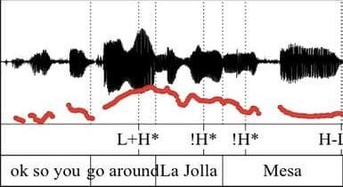

<div class="blurb">
	<p><h1><a href = "https://www.medicalnewstoday.com/articles/273060#-Trading-fours-"> Music as Language</a></h1>
</div>
<div class="blurb">
	<p><h1><a href = "https://www.wbur.org/commonhealth/2013/12/04/uptalk-spreads-valley-girls">Music in Language</a></h1>
</div>
	<p><h1><a href = "https://soundstudiesblog.com/2018/06/25/mixtapes-v-playlists-medium-message-materiality/">Language about Music</a></h1>
	<p><h1><a href = "https://theconversation.com/aboriginal-australias-smash-hit-that-went-viral-112615">Language in Music</a></h1>
</div>
